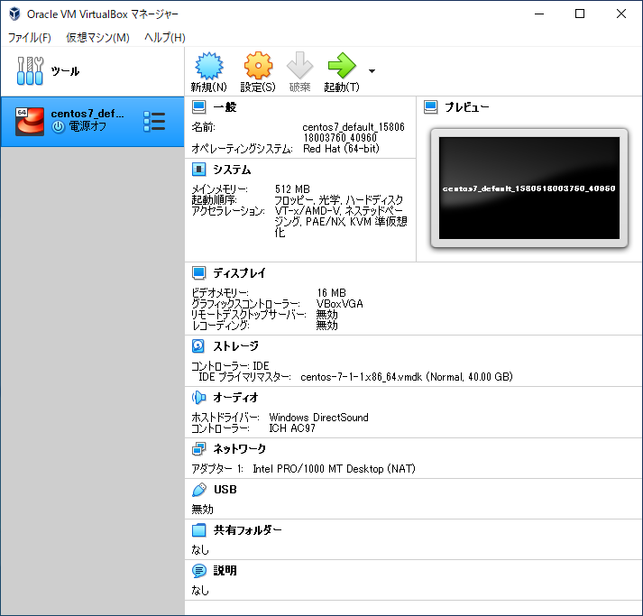
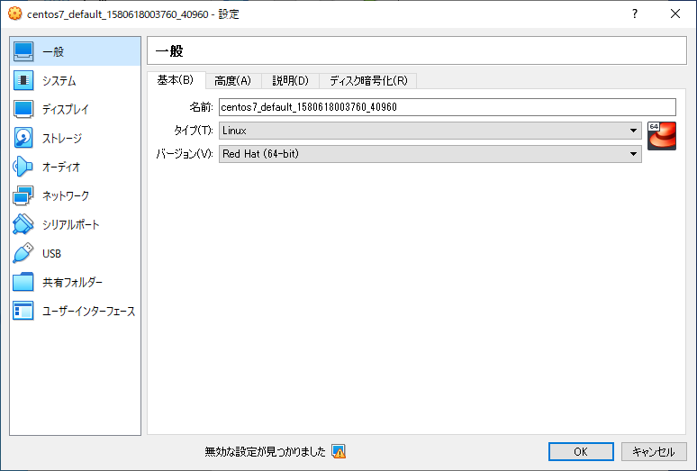
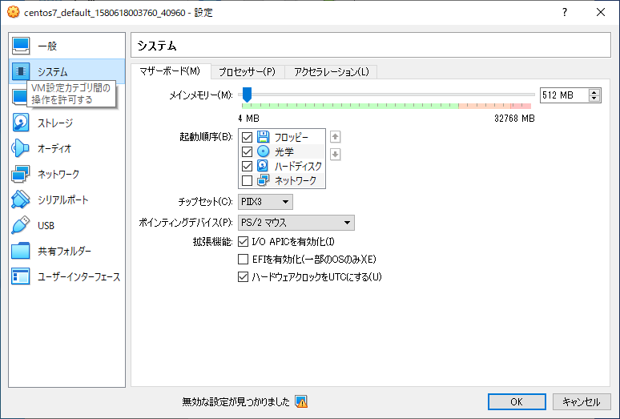
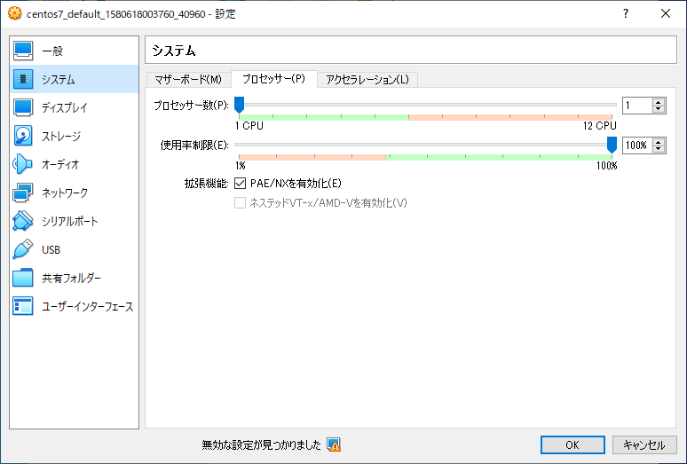
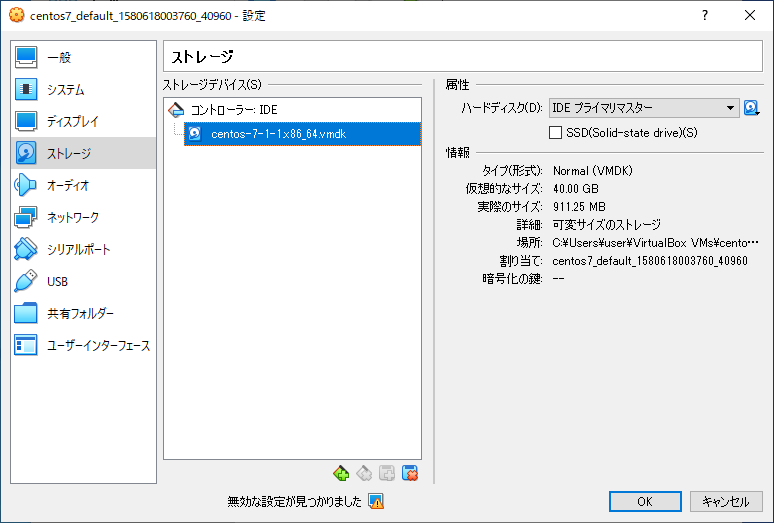
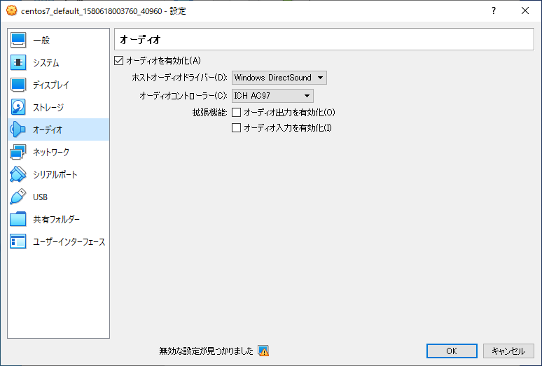
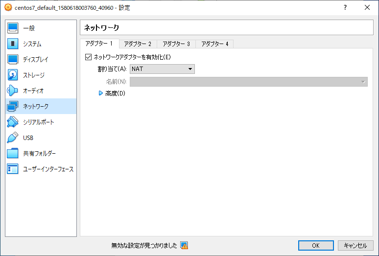

デフォルトの仮想マシンの仕様
「ウォークスルー」で扱った Box ファイル "centos/7" で作成した仮想マシンを例に、vagrant で作成した仮想マシンの詳細を確認します。
【トピックス】
仮想マシン自体の仕様







仮想マシンの仕様
デフォルトアカウント
root / vagrant
vagrant / vagrant
公開鍵認証
C:\vagrant\centos7\.vagrant\machines\default\virtualbox\private_key